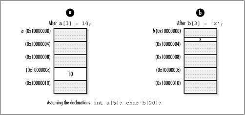

2.3 Aggregates and Pointer
Arithmetic
One of the most common uses of pointers in C
is referencing aggregate data.
Aggregate data is data composed of
multiple elements grouped together because they are somehow
related. C supports two classes of aggregate data: structures and arrays. (Unions, although similar to
structures, are considered formally to be in a class by
themselves.)
2.3.1 Structures
Structures are
sequences of usually heterogeneous elements grouped so that
they can be treated together as a single coherent datatype.
Pointers to structures are an important part of building data
structures. Whereas structures allow us to group data into
convenient bundles, pointers let us link these bundles to one
another in memory. By linking structures together, we can
organize them in meaningful ways to help solve real
problems.
As an example, consider chaining a number of
elements together in memory to form a linked list (see Chapter
5). To do this, we might use a
structure like ListElmt in the following code.
Using a ListElmt structure for each element in
the list, to link a sequence of list elements together, we set
the next member of each element to point to
the element that comes after it. We set the
next member of the last element to NULL to
mark the end of the list. We set the data
member of each element to point to the data the element
contains. Once we have a list containing elements linked in
this way, we can traverse the list by following one
next pointer after another. typedef struct ListElmt_ {
void *data;
struct ListElmt_ *next;
} ListElmt;
The ListElmt structure
illustrates another important aspect about pointers with
structures: structures are not permitted to contain instances
of themselves, but they may contain pointers to instances of themselves. This is an important idea in building
data structures because many data structures are built from
components that are self-referential. In a linked list, for
example, each ListElmt structure points to
another ListElmt structure. Some data
structures are even built from structures containing multiple
pointers to structures of the same type. In a binary tree (see
Chapter
9), for example, each node has pointers to two other
binary tree nodes.
2.3.2 Arrays
Arrays are sequences of homogeneous
elements arranged consecutively in memory. In C, arrays are
closely related to pointers. In fact, when an array identifier
occurs in an expression, C converts the array transparently
into an unmodifiable pointer that points to the array's first
element. Considering this, the two following functions are
equivalent.
int f() {
int a[10], *iptr;
iptr = a;
iptr[0] = 5;
return 0;
} |
int g() {
int a[10], *iptr;
iptr = a;
*iptr = 5;
return 0;
} |
To understand the relationship between arrays
and pointers in C, recall that to access the i th element in an array
a, we use the expression: a[i]
The reason that this expression accesses the
i th element of
a is that C treats a in this
expression the same as a pointer that points to the first
element of a. The expression as a whole is
equivalent to: *(a + i)
which is evaluated using the rules of pointer arithmetic. Simply stated,
when we add an integer i to a
pointer, the result is the address, plus i times the number of bytes in the
datatype the pointer references; it is not simply the address
stored in the pointer plus i
bytes. An analogous operation is performed when we subtract an
integer from a pointer. This explains why arrays are
zero-indexed in C; that is, the first element in an array is
at position 0.
For example, if an array or pointer contains
the address 0x10000000, at which a sequence of five 4-byte
integers is stored, a[3] accesses the integer
at address 0x1000000c. This address is obtained by adding
(3)(4) = 1210 = c16 to the address
0x10000000 (see Figure
2.3a). On the other hand, for an array or pointer
referencing twenty characters (a string), a[3]
accesses the character at address 0x10000003. This address is
obtained by adding (3)(1) = 310 = 316 to
the address 0x10000000 (see Figure
2.3b). Of course, an array or pointer referencing one
piece of data looks no different from an array or pointer
referencing many pieces. Therefore, it is important to keep
track of the amount of storage that a pointer or array
references and to not access addresses beyond this.
The conversion of a multidimensional array to a pointer is analogous to
converting a one-dimensional array. However, we also must
remember that in C, multi-dimensional arrays are stored in
row-major order. This means that subscripts to the right vary
more rapidly than those to the left. To access the element at
row i and column j in a two-dimensional array, we use
the expression: a[i][j]
C treats a in this expression
as a pointer that points to the element at row 0, column in
a. The expression as a whole is equivalent
to: *(*(a + i) + j)
 |